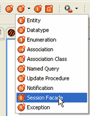
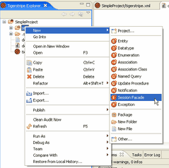
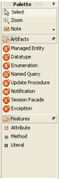

Using the Class Diagram Editor
You have the same tools available with the Class Diagram Editor however, you have multiple ways to access them.
| Standard Toolbar |
Right-click shortcut menu
(from the Tigerstripe Explorer view) |
Class Diagram Editor Drawing Palette |
|  |
 |
 |
|
Class Diagram Editor Tool Bar
|
|
Standard Toolbar
Click the Create a new Tigerstripe Artifact ( ) button on the standard Tigerstripe toolbar. The Artifact menu displays, from which you can select the item you wish to create in your service contract.
Right-click Shortcut Menu
Right-click on the src folder in the Tigerstripe Explorer and a short-cut menu displays. This menu is often referred to as a Context Menu, as the contents of the menu change depending
on the context in which you right-clicked. Selecting New from the Context Menu launches the New Artifact dialog box for the type of Artifact you selected. Enter the required information for your new Artifact and click Finish. The Artifact displays in the Diagram editor.
Class Diagram Editor Drawing Palette
The Drawing Palette is the most convenient way to create your service contract when utilizing the Class Diagram Editor. The drawing palette automatically displays on the right hand side of the Class Diagram Editor once you create your project. In addition to the Artifact menu options, you can also:
- Select items in your diagram using the Select tool (
 ).
).
- Zoom in closer to view specific areas of your diagram using the Zoom tool (
 ).
).
- Zoom out to view your entire diagram by pressing SHIFT + the Zoom tool.
- Attach notes and text to your diagram by using the Note tool (
 ) and the corresponding
pull-down menu to select from the options available: Note, Text, Note Attachment. For more information about the Note tool and the Text tool, refer to Attaching Notes and Text.
) and the corresponding
pull-down menu to select from the options available: Note, Text, Note Attachment. For more information about the Note tool and the Text tool, refer to Attaching Notes and Text.
Note: If you rest on the drawing area of the editor, an Artifact shortcut menu will appear. The tools available from this menu are identical to the tools available
from the other access options.
Class Diagram Editor Tool Bar
The Class Diagram Editor's Tool Bar is another convenient way to create Artifacts when utilizing the Class Diagram Editor.
This Tool Bar appears in the main Class Diagram Editor whenever the focus in the editor is on the diagram
itself (rather than any of the objects contained within the diagram) and you hover for a few seconds in the main Class Diagram Editor
editor. Once the Tool Bar appears, you can click on any of the icons a new Artifact of that type is created in the
Class Diagram Editor window. If you don't select anything from the Tool Bar, it will disappear in a few seconds. If you want to force the Tool Bar to reappear, move your cursor a bit and hover again over the main diagram window. This Tool Bar component has proven to be one of the easiest (and most intuitive) ways to create new artifacts using the Class Diagram Editor (easier, even, than the
use of the Drawing Palette).
Related Topics
The Class Diagram Editor
Working with Tigerstripe Artifacts
Adding Relationships
Additional Class Diagram Editor Tools
 The Class Diagram Editor Overview
The Class Diagram Editor Overview
© copyright 2005, 2006, 2007 Cisco Systems, Inc. - All rights reserved